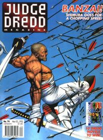
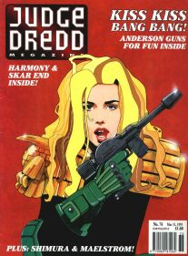
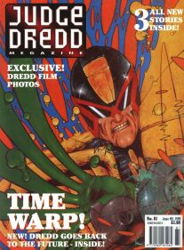
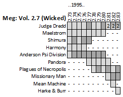

|  |  |  |
| Meg 2.74: Shimura by Jason Brashill |
Meg 2.76: Judge Anderson? by Steve Sampson |
Meg 2.81: Judge Dredd by Tom Carney |
Meg 2.73 jumps us on for the final eleven issues of volume #2. The switch from volume to volume doesn't follow consistent reasoning. From volume #1 to #2 it was the change from monthly to fortnightly (and 52pp to 44pp). But then it went back up to 52pp from meg 2.50. So, the switch over to volume #3 seems driven by the rebranding of the titles that was coincident with the Stallone movie.
Anyway: here we are, before all of that happened, still enjoying a relatively powerful line-up of thrills. There are lots of different art styles on offer and, whereas the prog of the time is feeling tired as it dredges the subs drawer, there's something much fresher going on here. Even in the case of something not quite making classic status, almost everything is at the least interesting.
Judge Dredd
Towards the end of this stage we start to get a double dose of Dredd, and there's a danger of weakening the anthology strength of the comic. The odd editorial aspect is that the three extra Dredd stories don't have any title or sub-title: most stories at the time had a credit page, but these just don't.
Highlights: Skar is a 37-page monster of the week that's the same as but not as good as Raptaur. Terror With Mrs. Gunderson starts up the idea of her apartment being haunted (by Brian Skuter), and it's Dredd that suggests she run it as a paranormal experience. Repeat Offender explores the idea of the same scene playing out time and again: so it's Groundhog Dredd.
Next stage continues the double dose of Dredd...
Maelstrom *NEW THRILL*
Featuring an international group called the STAR Judges, who are attempting to root out planetary corruption, but end up fighting human/pterodactyl hybrids because of ... reasons. It's space-LARP!
Tis a one and done. For completists, Extreme Edition #17 offers a reprint alongside some original designs by Chris Halls. There's an argument that this serves as partial inspiration (alongside Warhammer 40K) for 2008's Insurrection.
Shimura
Chambara sees Shimura escape a yakuza hit squad and the authorities by utilizing Hannibal Lector's infamous literal-face-mask technique. The Transcendental Assassin demonstrates Shimura's ability to deflect arrows and smash someone's face in. Heavy Metal sees Inaba try to talk a fellow officer down from committing ritual suicide (as she is also subjected to dishonourable behavior from her superiors). Finally, Assassins has Shimura hire hit-men to take him out so that he can learn their secrets (whilst it also tells a mirror story of an ancient ronin).
Shimura's back with a longer tale starting in meg 3.14...
Harmony: Transient 114
An amazing blend of the sci-fi tropes of the age, this has mind-altering drugs as societal balms (Do Androids Dream of Electric Sheep), minds having been altered (Total Recall), a facsimile of ED-209 (Robocop), but piloted (Mechwarrior), and a mass market gladitorial fight to the death (The Running Man).
Harmony Kreig (having been captured last time we saw her) has been brainwashed into a killer-ratings ... killer, as she pilots her mech against wannabe winners of a gory game show. She even has a banner line on local billboards: "Can You Survive The Blitzkrieg?"
What this does really well is broaden the story out from just being about a sassy bandit, and add in themes to do with societal control and corporate gangsterism.
Harmony's back with the launch of volume #3...
Anderson, Psi-Division
Postcard To Myself brings Anderson back to MC-1 from her backpacking trip around the galaxy so that she can investigate Something Wicked, in her new guise as a pouting, nail-biting, lip-licking, glam, disco queen. A cult is moving some people off-world, and employs very powerful (and aggressive) psychic phenomena to get its way.
Cassandra predicts her return with the launch of volume #3, in a story billed as the direct sequel to this one...
Pandora: Mural Scream
Pandora actually launched with an eight-page story in the 1994 Mega-Special, showing off more of John Hicklenton's unique art style. She's a Wally Squad operative who goes deep cover into a metaphysical drug gang that's part of an SJS plot to psychically monitor the citizens (that, for some reason, involves passionate, leather-clad, psychedelic sex rituals).
This is it for Pandora. I don't know if it's ever been reprinted, but a John Hicklenton special wouldn't go amiss.
Plagues Of Necropolis *NEW THRILL*
An interesting idea, this harks back to 1990's Necropolis mega-epic in the weekly prog and provides six standalone side-tales (set prior to Dredd's return to the city) from five artists.
That's all the plagues Si Spencer was willing to unleash. They get a reprint in meg 355's floppy.
Missionary Man
Inspired by those scenes of confidence tricksters selling potions to credulous townsfolk of the old west, Medicine Show has Preacher Cain deliver some righteous fury.
The two-part Night Riders has some sketchy art but a powerful redemption story: a Texas City hotdog run where it's standard practice to murder muties gains the attention of Preacher Cain (who it turns out is an ex-TC Judge who's taken the long walk as an Outlands Marshal).
Preacher Cain rides nonchalantly back into town with the launch of volume #3...
Mean Machine: Visiting Time
Another dose of Hicklenton magic, in which Mean's son (Junior) visits him. This riles Mean into an escape with unfortunate consequences - not least for one Jay Angel, who happens to be first in the 'phone book when Pa tries to track down Junior.
Wagner passes the dial to Rennie and Mean's next few greasy spots are special-bound: he shows up in the '95 & '96 Sci-Fi Specials and the '96 Mega-Special before returning to the meg in issue 3.69...
Harke & Burr: Secret Origins
Inspired by those scenes of confidence tricksters selling potions to credulous townsfolk of the old west, this sees Harke & Burr trying to bring rain to a parched Cursed Earth settlement.
The final series starts in meg 3.04...